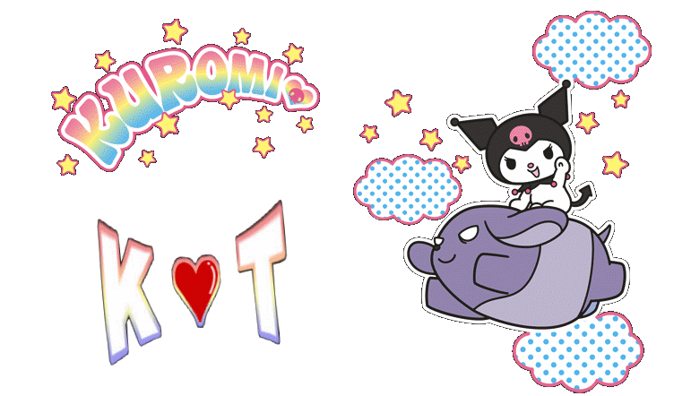
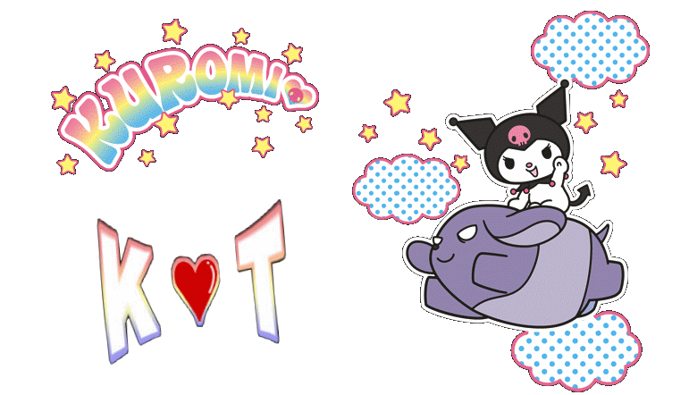

Hello Kitty!
The Queen of Sanrio
Her name is Kitty White (キティ・ホワイト Kiti Howaito), and she is born in the suburbs of London, England, on November 1st. Her height is described as five apples and her weight as three apples. Her head accounts for approximately half of her total body mass.
She is portrayed as a bright and kind-hearted girl, very close to her twin sister Mimmy. She is good at baking cookies and loves Mama's homemade apple pie. She likes to collect cute things and her favorite subjects in school are English, music, and art.